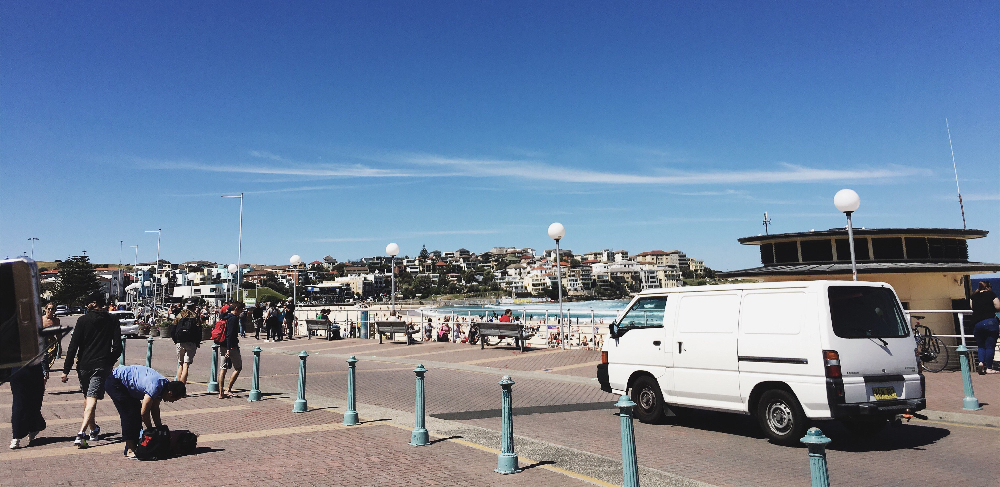
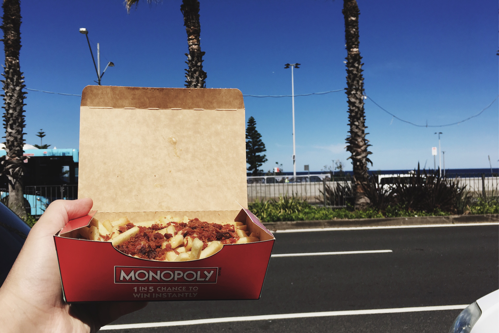

Bondi Beach
Because I am currently studying in Sydney, my first choice of favourite travel destination would be Bondi Beach.
Bondi Beach is one of Sydney's tourism icon. Located in the eastern coast of Sydney, Bondi is just one bus ride from Bondi Junction, which is accessible by train.
Bondi is a very bustling beach, swarming with visitors, surfers, and people sunbathing. Aside from the fine sand and crashing waves, along with the stunning views, Bondi is a place with a lot of festivals and markets as well.
There are quite a lot of restaurants nearby, selling from fast food, sea food, to ice cream and desserts.
I ate McDonalds the first time I went to Bondi last Spring. It was located right in front of the bus stop. There are also other fast food restaurant nearby, also the famous Hurricane ribs, Anita the ice cream parlour, and local seafood restaurants.
External links: